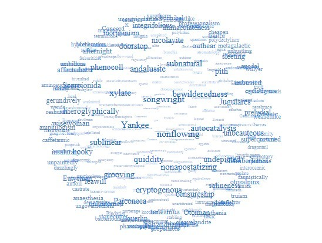

NPKMP个人知识管理计划详解：后互联网时代个人知识管理刍议¶
欢迎来到NPKMP源站点！
近期更新：2023-10-04
迭代版本：3
目录
速览（TLDR）¶
NPKMP = NOISNEMID Personal Knowledge Management Plan , NOISNEMID个人知识管理计划。
NPKMP旨在构建高效的、有无限可能的个人知识管理工程化实践参考。
NPKMP认为：
基于本地纯文本标记语言和工具链的电子笔记体系是后互联网时代个人知识管理的较优方案；
使用纯文本标记语言作为笔记核心载体
使用纯文本标记语言为二进制数据单独存储元数据和内容描述信息
使用纯文本编辑软件（含语言支持）作为核心工具
使用不同的专业软件处理二进制数据
选择一种分类法作为主动检索依赖
使用脚本语言对数据和工具进行链接
笔记的根本目的是“检索”，其它“记录”、“利用”、“分享”等皆衍生自“检索”；
做好备份。
声明、提示¶
本站专注于以下主题：
个人知识管理
个人知识管理工具链
个人知识管理工程化
此网站内所有内容全部原创首发于GitHub，凡在全互联网范围内任何地方发布时间晚于本后台仓库中代码提交时间的，均视为相关内容的副本。欢迎转载但请注明原作者和（或）指向此处的链接。
当前网址 https://noisnemid.github.io
讨论 https://github.com/noisnemid/noisnemid.github.io/discussions
此站本身即基于 NPKMP 中提到的 restructuredText (rST) 所构建，源码在 https://github.com/noisnemid/noisnemid.github.io 。
楔子¶
NPKMP的想法萌发于后互联网时代对个人知识管理曲折实践的归纳。
计算机技术很年轻，特别是相对于人类有文字记载的浩瀚光阴。数千年的浩繁卷帙大多仍未数字化。而使用计算机管理知识历史则更短。长期以来计算机领域对计算型任务的关注度远高于对知识管理这种服务型任务。智能手机时代使得个人电脑的市占有率再创新低，计算机信息管理素养相关技能渐成冷门。
最初接触电脑时头脑中并无任何知识管理的概念，时称初级文件管理为“资料存储”。拥有第一台电脑后很长时间及随着资料增多才逐渐有意识地进行资料的结构化管理，并进行了一些初级的探索。时值“后互联网时代”到来，高效信息管理的需求更加迫切。
在使用个人电脑对信息进行下载、管理的过程中，发现鲜有以终身学习为目的的商业软件。商业化的逻辑天然导向消极的结果。常见问题如：
由于工具软件停更、付费计划变更而不得不 频繁更换工具 而致 数据无法复用 的问题
在线数据导出受限
线上存储空间不足
编辑效率低、体验差
功能、结构扩展性差
因结构调整困难导致分类方案选择困难
检索困难
发布/分享方式 、途径选择困难
其中，第一条是其它问题的根源，其它问题可以视为对于时间或物质成本的妥协。于是，一些工具选型标准逐渐形成，例如强制要求云端存储的将被一票否决、 使用非标准数据格式的一票否决……
在对信息载体、工具等的选型标准进行归纳后发现有将之进一步提炼、抽象和结构化的可能，于是参考公理化、自然演绎、层次化和系统思维等思路，在自底向上地从实践向理论总结的基础上，尝试自顶向下地从理论到实践的角度阐述利用个人电脑管理信息的思路和技巧，并将实践的结果作为论据打包为一套尝试通过通过一系列脚本将多个工具软件联结为一条或多条针对纯文本标记语言文件的操作流程，称为“ “Plan”。
也许读者对于上述过程有所共鸣，但并未系统归纳，是以成文，以便交流。
演绎¶
自评：“公理化方法”的表，“自然演绎法”的里。；）
定义¶
知识
在知识管理领域：
广义的知识定义指包含了知识的各种形式和类型，涵盖了个体和组织内部以及外部的知识资源。它强调知识的多样性和广泛性，包括了经验、技能、信息、洞察、价值观等多个方面。广义的知识定义关注知识的获取、创建、共享、应用和保护等方面，以促进学习、创新和决策的能力提升。
狭义的知识定义更加具体和局限，通常指的是明确的、结构化的知识，以及对知识的形式化表示和存储。这包括了知识文档、数据库、专家系统、规则和模型等形式化的知识表达方式。狭义的知识定义主要关注知识的组织、存储、检索和应用，强调知识的可操作性和效率。
在NPKMP中，主要关注狭义知识，特别是指具检索可能性的、强烈的可文本化的信息。显然广义的和狭义的知识定义并不是互相排斥的，而是相互补充的。在实践中，知识管理通常综合考虑广义定义和狭义定义，以满足组织的综合知识管理需求。
在知识管理领域，广义的知识定义强调了知识的多样性和广泛性，包括了个体和组织内外的各种形式的知识资源。这种定义认识到知识的复杂性和多维性，并强调知识管理需要关注从多个来源获取知识、有效地组织和共享知识，以及支持学习和创新的能力。狭义的知识定义更加侧重于具体的、形式化的知识表达和应用，强调知识的存储、组织、利用信息技术和工具来管理和应用知识。这种定义更加注重知识的可操作性和效率，强调知识管理系统和工具的建立和应用。
知识管理
知识管理是一种系统化的方法和实践，旨在有效地获取、创建、组织、存储、共享和应用知识，以支持个体或组织的学习、创新和决策。具体来说，知识管理包括以下方面的活动和过程：
知识获取：通过各种渠道和方法获取外部知识资源，如研究报告、市场调研、专家意见等，以及内部知识资源，如员工经验、项目经验等。
知识创建：通过内部协作、研发活动、创新实践等方式创造新的知识，包括新的概念、模型、解决方案等。
知识组织：将获取和创建的知识进行分类、整理和结构化，以便有效地组织和存储，例如知识库、文档管理系统、标签分类等。
知识存储：将知识以适当的形式保存和记录，包括文档、数据库、专家系统、经验库等，以便后续使用和访问。
知识共享：促进知识的共享和传播，通过内部沟通、协作平台、社交网络等方式，使知识能够被广泛访问和利用。
知识应用：将知识应用于实际问题和决策中，支持组织的学习、创新和持续改进，提高工作效率和竞争力。
知识评估：对知识进行评估和审查，以确定其质量、可靠性和适用性，帮助组织决策和改进知识管理过程。
知识管理旨在通过有效地获取、组织和应用知识来提高组织的学习能力、创新能力和竞争力。它涉及到人员、流程和技术的综合考虑，需要有效的沟通、协作和文化支持。
需要注意的是，知识管理是一个动态的过程，随着时间和需求的变化，知识会不断更新、演进和调整。因此，知识管理需要持续的关注和管理，以适应不断变化的环境和需求。
个人知识管理(PKM)
即 PKM, Personal Knowledge Management。主要涉及个人直接或间接相关的广义知识文本化、数据化、可检索化的结构化组织管理理论与实践。
个人知识管理（Personal Knowledge Management，简称PKM）是指个体对自己的知识资产进行有效管理和利用的过程和方法。它强调个体在日常生活和工作中主动地获取、组织、存储、共享和应用知识，以提高学习能力、工作效率和个人发展。
个人知识管理涉及以下方面的活动和实践：
知识获取：主动寻找和获取有价值的知识资源，如书籍、文章、网上资源、培训课程等，通过学习和经验积累来扩展个人知识。
知识组织：将个人获取的知识进行整理、分类、标记和归档，以便于后续的查找和使用。这可以包括使用笔记、思维导图、标签、文件夹等工具和方法。
知识存储：选择适当的方式将知识保存和存储，可以是电子文档、笔记本、云存储等，确保知识的可靠性和可访问性。
知识整合：将不同来源的知识进行整合和关联，形成更完整和综合的知识结构，帮助个体更好地理解和应用知识。
知识共享：与他人分享和交流个人的知识和经验，可以通过社交媒体、博客、会议等方式，促进知识的传播和协作。
知识应用：将个人的知识应用于实际问题和任务中，提供解决方案、支持决策和创新，提高个人的工作效率和质量。
反思与学习：通过反思和总结个人的经验和学习，不断改进和调整知识管理的方法和实践，提高个人的学习能力和适应能力。
个人知识管理注重个体对自己知识资产的主动管理和利用，帮助个体更好地应对信息爆炸、快速变化的环境和日益复杂的任务。它强调个体的自主性、自律性和自我组织能力，以实现个人的学习、成长和发展，增强自身对知识的掌握，增加内化知识的比例，增强内化知识的熟练度，创造新知识。将信息归类的能力属于内化知识，检索到的具体文档、文本内容，属于外化知识。
需要注意的是，个人知识管理是一个个体化的过程，每个人的知识需求和偏好可能有所不同，因此个体可以根据自身情况和目标，选择适合自己的知识管理方法和工具。
PKM有许多衍生概念，不再一一赘述，如：
PKS（Personal Knowledge System）个人知识管理体系，与广义上的PKM基本相同。
PKE（Personal Knowledge Environment）个人知识环境，特指PKM的软硬件环境。
后互联网时代
指社交网络兴起后，国际互联网（Internet）逐渐走向保守、割裂、封闭的情况。
其重要特征是信息可检索性急速下降，与“互联”之本意渐行渐远。
所谓“后互联网时代”并非学术化概念。早期人们通过互联网获取大量信息最可堪一用的途径是 Telnet BBS ，然后是1990年被发明的HTML，互联网资讯开始爆发增长。如今互联网上数千亿网页中充斥着各种几经转手的碎片化信息，文件发布格式、复杂多变的前端技术框架、圈地自萌的社交网络商业逻辑、信息密度低下的视频数据泛滥等，都仿佛昭示互联网的发展已偏离其初衷，互联网信息可检索性、信噪比正在变得更差。后互联网时代为个人提供了更多的学习知识的可能，也制造了许多挑战和困难。随着互联网信息和知识传播分享日趋保守，在通用强人工智能技术取得突破且被大量应用之前，精确检索互联网内容竟变得越来越困难。
互联网需要一次重生。
系统思维
由于个人知识管理的动态化特征，建议使用系统思维进行应对。
系统思维指这样一种认识论：将对象按照“实体、关系、方法、模型”的层次进行分析处理，类似于我国“道、法、术、器”的理念，或者经典的DIKW模型。
其重要的构成要素包括：
整体性
结构化
标准化
工程化
动态性
灵活性
可伸缩的数据规模
可随时调整的架构
演化、迭代和成长
高持续性
NPKMP
NPKMP即“NOISNEMID个人知识管理计划”（ NOISNEMID Personal Knowledge Management Plan ），是由笔者所构想的一种用于个人用途的基于个人计算机的知识管理实践模型，简而言之，NPKMP是个人知识管理的实践、探索，以及理论尝试。
其中：
NOISNEMID其实就是一个通过反拼单词生成的SEO字符串，用于唯一化命名，无实际意义。
PLAN即计划，是对PKM中涉及的实体、关系、方法和理论的规划、探索、讨论与思考的实例打包。
具体地，基于系统思维，NPKMP属于一种基于「纯文本标记语言」和「弱结构数据存储」与「灵活的文本组织结构」的「个人知识管理尝试」和「数字资讯管理实践」。
NPKMP的目标是打造 个人终身学习工具（链） 。
公理¶
知识是无限的。
知识是全信息。是一切一切包含物质、能量运转的全部过往现在与未来的原理和法则。
人力是有限的。
人的体力、脑力、认知都是有限的。
定理¶
知识是动态的。
基于公理1，知识的运动状态隐含于无限之中。无时无刻不在运动、变化，它在增长、繁衍；旧的知识消亡被替代，新的知识涌现或创生。
知识是个体化的。
基于公理2，知识是由个体主体根据其独特的经验、认知和理解所构建和理解的。个体的知识管理需要考虑到个体差异和多样性。
知识是涉及认知过程的。
知识的获取、组织和应用涉及个体的认知过程，包括感知、理解、记忆、思考、推理和解决问题等。个体知识管理需要考虑到这些认知过程的特点和优化方法。
人无法认知知识的全貌。
“对知识的描述”，不是“知识”本体。
知识是无结构的。描述知识本身是不可能的。要描述知识，必须选择一个视角，这意味着选定一个维度。任何维度的描述都不是“知识”本身，而只能一个空间断面，一个时间的、瞬息的快照。
描述知识所用的视角、模型，可能是无限的，也应该是无限的。
知识管理需要有效的工具和技术支持。
个体知识管理可以借助适当的工具和技术来帮助知识的获取、组织、存储和共享。这些工具和技术可以包括笔记应用、信息管理系统、协作平台等。
知识管理需要灵活性和适应性。
个体知识管理需要具备灵活性和适应性，能够适应不同的知识需求、变化的环境和新的学习机会。个体应该持续学习和调整知识管理策略。
推论¶
知识的不断增长使得知识管理变得更为重要。
对知识的认知和使用是知识的一部分，也是生命能够在宇宙立足的根本倚仗。对知识的管理、对知识管理的研究、知识管理工具的创造，是能够使得知识更加高效力的重要保障和催化剂。
选择适当的视角和模型是描述知识的必要条件。
“分类”的目的是为了检索，是应对人类记忆力限制的一种方法。在对PKM进行如上粗浅思考的过程中，长久以来萦绕于心的关于“知识”的图景不断变化，其身影也如迷雾中的远山逐渐显露身形。据说人类无法想象出从未见过的事物，所以随后的描述必然有局限性。
知识的典型描述模型之一是“星球或引力模型”，即“知识”内部的“知识集”如无数星河电转，各“知识集”的联系如引力一般，远小近大。3D标签球这一可视化效果可提供一种简单却直观的展示。
类似地，可以在其它维度上分析，可以是“树”模型：层次分明，包含与被包含。
可以是以下任意模型“学习金字塔、费曼技巧、刻意练习、RIA阅读法、二八定律思考力：5W1H分析法、思维导图、SWOT分析、10/10/10法则创造力：六顶思考帽、头脑风暴、逆向思维、类比思维、SCAMPER创新思维设计力：设计思维、最小可靠性产品（MVP）、峰终定律、AARRR漏斗模型、上瘾（HOOK）模型共情力：五大圈层模型、高效倾听模型、情绪ABC模型、乔哈里视察、冰山模型故事力：故事五要素、SCQA模型、SRAR模型、STORY模型、“英雄之族”模型领导力：领导力梯队、情景领导力模型、GROW教练模型、管理4C模型、TOPIC模型整合力：杠杆思维、POA行动、系统思维、整合思维模型、多元思维模型……”（来自网络）
总之可以是任何你能想象得到的对信息的组织和利用形式。
知识管理需要多样化的方法和工具支持。
个体的知识管理需要不断学习和调整。
弱依赖
说白了就是，未来知识管理的理论和工具必然发生巨大变化，因此数据本身必须对于工具呈现“弱依赖”性，必须保证：
在未来使用新工具管理旧数据的可能性
在未来迁移数据的低开销
可检索性
必须保证所有进入知识库数据的可检索性。确切地说，不管使用什么工具或手段，必须可以通过自动化手段取回数据。
同构
个人知识管理的最小组织单元和更大尺度的组织单元呈现相同结构，不同个体之间的信息组织结构呈现相同结构，从而最大化保障信息融合、共享的效率。
工程化 ⭐⭐⭐⭐⭐
通过工程化操作最大化个人知识管理的效率，具体包括：
流程化的操作序列
链式工具组合
刻意的技能训练
需要特别指出的是，随着推论序号的增加，其在具体PKM实践中的操作比重正在上升。刻意的“工程化技能训练”将在日常的、高频次的、高强度的知识管理实践中发挥决定性作用。甚至可以说，整个NPKMP都是为了实现这一目标而构建的。
人脑参与性
“个人”应当作为PKM的一环被考虑。
NPKMP中具体指，人应作为知识的第一道滤波器，首先过滤低质信息、无关信息进入知识库。
理论¶
实体¶
NPKMP的实体分为两种：纯文本和二进制。
纯文本¶
纯文本是为了增强数据可复用性、可检索性和安全性：
可复用性
可方便地将纯文本应用于多种工作流中。
可检索性
可施加几乎任意的检索方法或工具，至少包括：正则表达式、索引、数据库、自制脚本……
安全性
主要指数据保存层面的安全性：即使硬盘损坏，也可通过直读字节数据恢复的技术手段，将信息最大程度还原；
将要指对工作的依赖性低。杜绝因特定软件消亡导致的潜在麻烦；
NPKMP中纯文本包含两种：
纯文本文件格式的笔记内容
用于存储人类可自然阅读的信息。
元数据与扩展描述信息
主要是为了增强二进制数据的可检索性，弥补操作系统对二进制数据检索功能和性能上的缺失。
实现思路是在二进制文件旁边或者约定的路径，用纯文本文件存储其元数据及描述性信息。随后用户既可以通过脚本方便地对这些数据进行结构化处理，又可以直接对其进行纯文本检索，甚至可以对其进行索引。反观如果不进行这样的操作，要想实现对二进制文件的检索，只能通过文件名或操作系统本身的元数据检索功能进行检索，其准确性和效果一般来说都是比较差的。
二进制数据¶
非纯文本内容的其它数据。
关系¶
NPKMP中，“关系”是指分类法。
“关系”不一定是唯一的，或者说，必然是多样的，所以不必追求一种关系结构，这同时意味着，必须在“实体”的设计阶段，就提前为多种“关系”的应用提供可能。
分类法千变万化，但本质都是为了提升检索效率，更加确切地说，是为了提升“主动”检索效率。注意，是主动。
方法¶
NPKMP中，“方法”指应用于“实体”和“关系”的具体工具、操作和流程。
工具：对不同实体进行操作需要的专门工具，如软件、硬件工具。
操作：指具体的操作内容。
流程：NPKMP中主要指工程化方法，即对于操作的统筹与安排，形成程序化、工程化操作的规则。
模型¶
指代NPKMP本身。
NPKMP可以是具体的一套实例，也可以是抽象的一个概念。
NPKMP本身也是变化的，以适应不同阶段的认知层次和PKM理论与技术发展水平。
实例¶
以下为具体的一套可供直接套用的 NPKMP 例子。
你可以将之当作是当你面对一些模棱两可的选择产生纠结时的一些取舍建议（俗称“选型标准”）。
层次 |
领域 |
筛选原则 |
入选者 |
|---|---|---|---|
实体 |
文件 |
成熟稳定 |
rST |
关系 |
分类法 |
快速 符合直觉 灵活 |
自然分类法 |
文件 |
可同 时实现多种分类 灵活 |
文件链接 对象存储 |
|
方法 |
编辑器 |
开源免费 扩展丰富 功能强大 灵活高效 |
VisualStudio Code |
工具链 |
灵活 |
Python YAML 各种 支持API的软件 |
|
备份 |
安全 灵活 |
多级备份 |
|
模型 |
模型 |
灵活 |
系统思维 |
以下为详细阐述。
实体¶
reStructuredText (rST)¶
优点：主要用于替换MarkDown，相对MarkDown，rST的优点主要体现在：
标准化：目前rST只有一种标准，不似MarkDown有多种标准；
更丰富的标记和指令系统；
标题更加醒目，元素更加明确；
明确支持跨文件双链标记，粒度为“段落级”。
缺点：相对MarkDown支持的工具略少，但现在的足够使用。
作为此实例的核心是 reStructuredText （以下简称 rST），是一种文本标记约定，可以认为是一种标记语言，但本质上它是一种标记规范。从笔者个人的角度来讲，选择rST，同样也不是基于什么理论指导，而是在使用 Markdown（以下简称MD）的过程中遇到许多问题，在寻找解决方案的过程中发现的。
rST笔者认为是一种对功能和书写舒适度的平衡，如果说 Markdown 更倾向于人的体验，XML更倾向于机器的解析，那么在这个天平之上，会有不同的语言星罗其上，侧重点各有不同。Markdown 的功能相对于rST来说太简陋了，而XML、yaml、json其实都可以用于笔记管理，但是书写体验和对于文本的支持显示是不适合的。
对于实体的选择标准，可以进一步细化，或者说，“实体”可以被进一步细分：
标题
文本段落
公式
表格
二进制文件
图片
图表（图片和表格之统称）
数据集
音频
视频
软件包
操作流程/演示……
流程图
思维导图
……
YAML¶
YAML作为二进制文件的元数据和扩展信息主要载体。
目的是为每一个需要进行元数据管理的文件（例如PDF形式的图书、视频文件、音乐文件等）。
虽然媒体文件可以带有自己的元数据，但是它需要进行读取且功能有限，在成熟的 Yaml 面前显得非常简陋。由于媒体信息刮削器所生成的nfo格式常常有所不同，可以通过脚本对其进行统一转换，以便进行检索。
Yaml 可以通过诸多工具（专门的软件或脚本程序，例如Python等），对其中存储的数据进行提取、解析、修改，方便地实现元数据的检索、统计等管理。
字段设计以文件名、各种类型的时期时间、各种类型的附加信息，以及最重要的分类和标签信息。同时，标签可以进行更加复杂的数据结构设计，各类字段可主要以数组/List为主，方便进行伸缩扩展。
可见，相比直接在二进制数据上附加元数据和扩展信息，使用Yaml作为标准化的二进制数据元数据和扩展信息管理载体，避免了对原文件进行修改、二进制文件版本更新等场景下所引入的的巨大的I/O开销，并提升了检索效率。
rST实施细节¶
同构化的工程目录结构规范¶
基于对rST和sphinx的理解，经过多次实验后，提出一种基于“同构”思想的目录结构规范。
“目录设计”不涉及具体分类设计，只提出对于文件组织模式的具体建议，并解释这样做的好处。
首先是sphinx工程的设置，务必设置为源文件单独存放。
其次是在源文件目录内，从初始层级开始，所有笔记的最小存储单位不再是单个rST文件，而是一个文件夹。该文件夹的目录结构全部为：
filename/
media/
filename.rst
这种目录名和文件名重复编码的操作，是出于对数据恢复时遇到目录结构损坏的情况的预判。
index.rst 的重要作用
当其需要被添加到TOC中时，在其外部放置 index.rst 。
此时，只要在该目录外层的rst文档中使用toc指令即可探测到该文件并将该目录内的文件一并添加至目录。如此体现出了统一路径结构的优势，即所有的目录，不管有无index.rst存在，可以随意放置于任何符合下列标准的目录中且不需要对index.rst作任何修改：
该目录中没有index.rst且没有任何其它rst文件
这表明这是一个未被索引的目录（docutils会提出警告）
或该目录中有index.rst存在
而不规范的操作的情形是，若将其置于没有index.rst且已有其它rst存在的目录中时，表明这是一个文档节点目录，即这是一个NPKMP最小文档节点单元，在其内部添加其它最小单元是不规范的。
不过不用担心，笔者已经编写了成熟的脚本进行探测和处理这一情况。
最后，这样做目的，一是统一化的目录规范可以减少笔记创建时的心智开销。二是可以方便笔记的分享和融合。由他人分享的同构目录，可以直接通过文件拷贝的方式置入当前笔记中，避免了对当前笔记工程、通过分享下载的笔记项这两者的额外修改，大大提升操作效率。
文件名规范¶
纯文本文件和二进制文件按照统一的命名范式进行。此规范由用户自行设计指定，此处给出一个示例：
文件名中仅出现以下字符：
半角字母（大小写区分）
半角数字
半角下划线
半角短横线（减号）
半角句号（点）
母语文字（在UNICODE中有明确分区）
除上述字符之外的所有全角符号、半角符号，全部不允许出现，包括空格、各类引号、括号、冒号、分号、波浪号、斜线、问号、感叹号、逗号、货币符号、&符号、百分号、#号、星号、分隔点、点、线符号，不管文件系统是否支持，均不出现于文件名，以实现最大限度的容错、兼容。
字段设计规范¶
以YAML文件为例：
所有字段名称均为英文小写单词为主，词语中仅有一种连接符（下划线）。 所有字符值均为列表/数组形式，哪怕只有一个取值，以方便扩展。
例如：
names:
- 知识管理基础
- KM Basis
关系¶
自然分类法 + 文件链接。
自然分类法¶
“NOISNEMID自然分类法”，简称“N氏自然分类法”或“自然分类法”，是在参考 DDC（杜威十进制图书分类法）、ICS（国际标准分类法）、GB/T_13745-2009（中华人民共和国学科分类与代码简表）、中图法、胡昌志先生的《国际图书集成分类法》等分类法的基础上，结合计算机系统软件和应用软件对于文件管理、信息检索的需求特点和技术实现方式而提出的一种实用性的分类方法。
应用场景¶
“自然分类法”主要用于：
基于（个人）计算机的、高效的资源文件组织、管理
针对文件名和全文的关键字快速、精准检索
为个人知识管理、个人知识系统的构建提供分类法支持与参考
可辅助用于现实世界中的图书管理
设计目的¶
缓解“分类困难、分类焦虑”。
设计该分类方法主要用于解决前述分类方法中存在的下列问题：
动态性和灵活性不足的问题
基于现实的考量，实体图书由于存储、运输、搬动很不便捷，为了防止频繁变更分类标准导致图书上架变更的额外人力物力开销，传统的图书分类法都是以相当的稳定性为大前提的。根据胡昌志先生的著述《国际图书集成分类法》所言及，因基于自顶向下的分类逻辑以及图书分类和知识分类的本质区别等，传统分类法在个人知识管理中会遇到一些问题，特别是在体系构建和信息分类存放时，经常会遇到分类困难的情况。
而存储于计算机硬盘上的数据，本质上都是0、1形式的二进制数值，但是通过不同的文件系统，可以实现丰富的文件形式和复杂的逻辑结构（常见的为树形结构，通过文件链接技术可以实现图状结构）。
同时，计算机文件可以方便地进行重命名和移动等操作，可以随时以近乎零成本的开销进行结构调整。
编码复杂和不直观的问题
传统图书分类法的编码基本上都是不直观的。不查询代码表是无法知晓其对应的含义的。
而在计算机系统中，通过为文件名赋予额外元数据信息，或通过附加文件专门存储元数据信息，或通过文件名和数据库记录映射的方式存储元数据信息，可以满足近乎无限的额外编码需求，届时只要为每一个图书文件绑定唯一的识别码（例如可以使用UUID、URI、某个级别的哈希值等），进而匹配任意多的额外信息，并通过对这些信息的重组，实现任意角度、维度和层次的分类模型。
例如，同一本图书，可以为其添加各种层次的主题词、出版信息、作者信息、题材、关键字……
然后，通过一些软件、程序，乃至简单的一段脚本，即可将相关信息进行提取、导出、运算，并运用到新的分类结构中，并通过文件链接等途径，在不更改原始文件分类、存储记录的前提下，生成一套或多套并行的分类目录。
在拥有唯一识别码的情况下，可以对图书设计任意形式的编码方案。
跨类别分类困难的问题
一是可以通过简单的文件链接，将同一图书文件置于任意多个分类分支下。
二是可以通过额外的权重字段，来调整或控制图书的分类唯一性。
三是上述的权重字段，可以通过量化评分、文本分析等技术手段进行人工或自动生成，使其更加具有科学性、可操作性和实用性。
设计思想¶
所谓“自然分类法”，即是遵循知识从产生的自然规律，即其动态性、聚类性。
所谓动态性，就是其分类数量并不会天然就规定好。
所谓聚类性，就是知识门类之类的联系之产生，几乎是必然的，不可避免的。从此角度上看，凡是静态的分类模式，必然是不完美的，也必然是会在使用中产生问题的。同时，知识之间的联系，最终必然会回归一处，而绝不会如树形结构一样单向的。简而言之，知识结构只能是图结构，不可能是树结构。
举例来说，从大部分分类法中无法避免的将知识首先分类为自然科学和社会科学（或类似的思路）两大门类这一现象，已经可以观察到这些分类法的背后，仍然受到各种层次或类型的二元论的影响。从笔者看来，知识本为一体，无分彼此，无分自然或人文社科，所有的学科，都是宇宙的知识，人与自然的交互，人与自然的关系，都是整个“宇宙的知识”的一部分。而从“个人知识管理”（Personal Knowledge Management，PKM）的角度来发散，其中的“个人”，何尝不是这个知识的一个元素。
而以上，正是自然分类法的核心概念所在。
应用原则¶
一、动态性¶
动态性是指不限定类别名称（主题词）数量，特别是不限制一级分类的分支数量，即，不限定为十进制的十个数字，也不限定为英文字母的26个或几者的组合。
欲要体现其序列关系（例如学科传承等），可通过对其元数据记录进行提取分析得出。
目录的层次关系仅指示其逻辑包含关系。
动态性是为了回应“知识迭代”的问题。知识迭代的一个重要内容，是知识结构的迭代。知识结构要更新、调整，原来架构的知识要革新、要沉淀，必然伴随结构的调整。静态的分类模型难于满足这样的需求，所以必须从根源上彻底否定一成不变的分类标准和实现方式，从一开始就约定，分类法中涉及的一切，都是可变的。
动静相宜：不过要注意的是，所谓动静之间，一阴一阳，相辅相成。动态性的良好实现，需要一个静态的基底，作为翻涌的动态化的知识海洋中的一条隐含的基线，就像东海龙宫中的定海神珍铁。例如，相对固定的或约定的文件名命名规则，从而方便使用脚本对文件和目录进行大规模的批量操作，包括但不限于结构调整、（元）数据检索、提取等。从这一角度上讲，动态性和灵活性互为诠释，动态性和灵活性与相对的固定性、标准化，共同在两个层次上，帮助知识管理体系的构筑，帮助整体知识框架的搭建。要明确这种“固定的约定”不是针对分类标准本身的，而是针对资源命名中的一些与内容和分类标准无关的细节的，包括不同主题词的连接符应当用下划线、连接符、点号，还是其它，以及哪些元信息应当被置于文件名中，等。
二、自然性¶
自然性主要体现在主题词的生成和获取，不拘泥于具体的标准，只视使用者的使用场景、目的以及具体的图书文件而定，其主题题可以取自上述任何标准化文件。
此举的深层次逻辑在于，分类标准的制订者（或群体）不可能是每个领域的专家与具体从业者，现实世界的复杂性决定每一份分类标准的制订都在其落笔之时已经落后于知识的产生。这时也许看官会注意到笔者仿佛又模糊了知识分类和书籍分类的概念，但一切以目的为准，不管是知识分类标准，还是书籍分类标准，都是为了知识体系的构建。但是千人千面，知识体系本身如同一个克苏鲁怪物，每人看到的都应当是不同的形态，或者说，其在不同人脑海中的投射，必然是其不同状态下的投影。就像一束光从上方照下来，经过一枚造型和切面复杂的镜片，镜片在三个轴上稍稍发生旋转、偏转或位移，最后在纸面上投射的光斑的颜色、形状都会不同……
咦，如果纸也动一动呢？ ；）
别闹……
更遑论每一个领域的知识，与其它领域，例如其上层抽象主题词所代表的领域以及其相邻的、不相邻的其它知识领域的知识，必然拥有不同的抽象方法、分类标准、组织形态，而在深入某一领域进行探索，必然是由于“人类科技树点歪了”之类的经济利益驱动型的不正常发展导致其下的细分变得更加复杂和多变，其分类的角度、出发点也不尽然全部都是按照学科、知识逻辑包含关系来进行。所以，既有的各类分类法、图书分类法，都只能是一个参考，顶多是作为一个主题词的获取途径和分类思路的参考角度。
但，要注意到，上述不同的分类形态，并不是互斥的。也许在实体书分类操作时，不同的分类标准或在不同层次上应用不同的分类标准是不可思议的事情，但是在计算机内部使用这些分类方案并让它们共存，是非常自然而简单的事情：可以通过在分类之上再抽象一层“不同的分类模式”的目录，也可以在外部单独建立专门的分类导航目录或系统（例如由脚本生成目录快捷方式或链接，或生成不同分类的导航入口，例如以HTML的形式）。
三、直观性¶
分类的名称直观体现其含义，不再是字母或数字。这不仅仅是直观，更是在操作时提倡“符合直觉”，这也与“自然”一词的字面意义与其内涵相呼应。
此外，在计算机中进行快速访问时，使用英文名称可以提高导航效率。例如将“计算机”改为“Computer”，则在文件管理器获取当前焦点的情况下，快速在键盘上依次按下“c”“o”或“c”“o”“m”（一般大小写不敏感），会快速定位到该目录上。
从这个角度上讲，一级目录中可以配置 676 个使用两个字母快速定位的目录名，可以配置 17576 个使用三个字母快速定位的目录名。
分类实践举例与探讨¶
以下以一些具体的分类主题词的实操为例，进行探讨。
文学类¶
以藏书第一大品类——“文学作品”——这一人们迸发收藏图书动机的最常见品类之一为例，来探讨其下子类的分配时，可以一窥自然分类法的核心主旨所在。
首先是这一主题词本身的级别问题。文学这一文本组织形式，天然便是由于其语言和文字为载体而成为书籍的第一驻民。从本质上“文学类”是不可能成为一级分类的，而诸多分类法中将其作为一级目录存在的理由可能是出于现实方便的目的。
其次是其下子类的分类原则问题。分类过程中主题词的形成，源自其分类标准。但是文学作品本身却拥有着多重身份，而对于书籍分类时一个重大问题也在此时显现：文学作品自身有多重身份，使用图书的人也有多重身份，同时拥有不同的目的。
传统图书分类法针对的是图书馆，首先其所面对的使用者拥有多种身份，但是最致命的问题出现了：分类者和图书使用者本质属于不同“阵营”。分类员虽然属于广义的用户类型之一，但是却首先拥有双重身份：一是他自己是分类标准的提出一方（从本质上讲，图书分类法的出发点是图书管理），但也正如胡昌志先生的《国际图书集成分类法》所言，“知识分类和图书分类是不同的概念”，此处便产生了冲突：图书分类者的目的是图书分类，而图书使用者绝大多数的目的是知识分类。二是用户的身份、目的和使用场景的不同，几乎必然要求不同的分类标准。以文学类为例，作者、研究者、读者是三类最常见的用户群体分类和目的分类，他们一般有相同的分类需求原则：文学研究可能会要求按国家地区、发表年限、作者来分，以方便开展文学研究或文学批评；作者可能会强调按作者或题材来分，而读者一般会强调按题材来分作为主要分类依据，部分书籍会按照作者来分类；读者绝大多数不会在意书籍的元信息的分类，只会在意对检索和阅读的影响。
相比硬盘存储，现实世界中在书架上存储图书的成本无疑是巨大的，传统图书分类法只能选择某一种分类标准加以“固化”，从而放弃动态性是对现实的妥协。
计算机类¶
传统图书分类法的另一个问题是其在面对不同专业以及跨专业领域的图书时，其相对单一和固定的分类标准（哪怕是学科分类法）会遭遇严峻挑战。图书分类法或ICS分类法，在触及到某个行业时，其有效性会迅速下降，同时由于某些领域知识内容的繁荣（一般是由于经济活动的繁荣），其专业、行业知识的增长（衍生或曰“涌现”）速度会迅速超越分类法主题词的规划预期，而各种预留的扩展设计，也会因其逻辑上的硬性规定而产生诸多不便或冲突，让使用者（作为部署的分类者、作为主动检索用户的读者）在使用体验或思维模式上产生被禁锢的负面感受，进而影响知识管理的效率。从这个角度上回看传统的图书分类法，在涉及专业领域的分类时，应当是由该领域的从业者来分，才显得更加合理恰当。
核心要义：“无中生有”起手式¶
所谓无极生太极，太极生两仪……
；）
无从下手之际，就先建立一个空目录，随意拉一个文件进来，如果有了灵感，例如，这一资源文件与当前你正在关注的任何领域有直接或间接关系的，或者任何你想到的分类主题词的，就把它归类到该主题词下即可。
然后，再随意拉一个文件进来。
这时有三个选择：
如果与前述的同类，则归入前述分类；
如果有了新的分类的灵感，就依样给它分类；
如果没有灵感，就放着不动；
然后继续重复上述步骤，拉取更多的文件进来。
在这一个有些像递归又有些像循环的过程中，一般情况下，分类结构会在上述步骤中得到快速的调整、变形，并逐渐以符合个人思维方式的形态趋于（相对的、总体的、暂时的）稳定。
随着归类的文件越来越多，其结构会得到不断调整，可能会经历大的调整，也可能（更多地）是不断地微调。
这，即是整个N氏自然分类法“动态”的精髓，是心法，是核心要义，是不传之秘。
；）
而从这个意义上讲，可以说是“从理论的高度，彻底解决信息焦虑中的分类焦虑”
；）
自然分类对文件备份操作的影响¶
注：此小节忽略备份和同步的差异。从个人资源管理的角度，笔者更关注于文件安全性，所以与这两者相关的讨论基本上都可归类于文件备份操作的范畴。而同时，rsync的“同步模式”可以看作备份操作的一种子类型。
相对较为固定的、大规模的、目录结构复杂的数据，在不使用RAID（阵列卡或NAS）时，需要使用手动的方式进行备份时，例如以rsync为代表的工具，此类工具的实现方式，决定其无法实现实时的备份或同步。要想达到实时的备份与同步，可以通过以下的一些思路实现：
在文件操作的上层再添加一层抽象功能。这一抽象功能层，可以是在进行文件写入操作时，首先由操作系统拦截并将具体的文件操作交由专门的程序接管，然后再将操作结果同步至多枚硬盘中。
也可使用脚本对文件的唯一性进行实时监听，实现映射保证；当操作任何一块登记在映射表的文件时，将该操作同步映射至所有和该文件进行链接的文件备份上
冗余文件系统，如 RAID-Z 文件系统，从而规避rsync等工具无法智能或实时检测文件无变化而仅仅目录变更的情况。
正是对于同步或备份操作中频繁调整目录结构而不调整文件时，同步软件无法智能感知的这一问题，催生了相对静态的分类标准，同时也催生了类似git的对象式文件操作形式，以及以 RAID-Z（TrueNas的好处不止这一条，其文件去重与git的实现有异曲同工之意，当然其性能开销是另一个话题了）为代表的冗余文件系统的诞生。又或者说，拓展了后者的使用场景与其技术意义的外延。
感想¶
自然分类法是自底向上的思想的实践。笔者认为知识的诞生不是自顶向下的，应是先遇到问题，再解决问题，从小向大，逐渐归纳总结才形成一门知识的。此分类法是在遇到各种问题后不断摸索实践的过程中逐渐形成的。
整个N氏自然分类法其实是一条隐含的线索贯穿其中，即“符合直觉”。一切都是以人的主观直觉、对知识、对世界的直观感受作为分类的出发点和落脚点的。人的思绪如天上浮云瞬息万变，又有谁能确定，知识的海洋，是永远风平浪静、波澜不惊的呢？
文件链接¶
通过 Windows 或 GNU/Linux 操作系统中的文件链接功能可以方便地将同一文件或目录应用于不同的分类框架之上，从而解决跨类、交叉等分类难题。
对象存储¶
从知识管理的角度，对象存储可认为是将“分类结果”以路径字符串的形式进行“表示”，并将这一字符串作为一个字段（不一定是主键）进行构筑，然后借助对象存储的技术，进行文件管理。
从这个角度上讲，它可以作为文件链接的强力竞争或替代，从而从较大程度上解除了“文件管理”中“调整目录结构”与“知识管理”中“调整分类结构”之间的耦合。具体地，就是文件你随便存，反正就是相当于数据库中的一条记录，而组织结构或分类实现了统一，可以有任意多个字段用于表征不同的分类体系，只要你有精力，你可以为一条记录附加任意多个“分类结果”。届时，对不同的分类体系直接按照对应字段提取数据并实时构建可视化结构以进行预览、检索即可。
方法¶
编辑器¶
VisualStudio Code（以下简称 VSCode）目前由微软主导的一款开源免费的高级纯文本编辑器，前期主要适用于前端领域代码编辑，后期开始引入语言服务器机制，使其可以用于几乎所有编程或非编程语言的编辑。同时由于其强大至极的社区和插件机制，使其成为目前最具开放性和发展前景的编辑器之一。
在不建议参与“编辑器战争”相关的争论（所谓“编辑器战争”）的同时，下面会列举出VSCode所覆盖的、特别是在高强度、高频率使用中，细节上使之脱颖而出的优点，并可被作为未来编辑器的设计标准：
(⭐数量表示重要程度)
软件架构层面：
开源
免费
跨平台 ⭐⭐⭐⭐
较高的功能抽象
成熟的API
可以方便地扩展出几乎任何你能想到的功能。
庞大的扩展数量 ⭐⭐⭐⭐
异步/实时保存 ⭐⭐⭐
打破了手动保存、文件独占的古早编辑体验。
完备的快捷键配置 ⭐⭐⭐⭐⭐
从输入体验上看，VSCode是人机工程学的优秀案例。其细致入微的快捷键体系，可让使用者通过深度的热键定制达到与软件心灵契合的境界
完备的配置项
集成终端模拟器
较低的学习成本
软件功能层面：
边栏文件浏览器
快捷命令 F1
快速访问 Ctrl+P ⭐⭐⭐⭐⭐
可以理解为标题检索
输入标题中的字符自动匹配文件
正则表达式文内搜索 ⭐⭐⭐⭐⭐
正则表达式目录内搜索 ⭐⭐⭐⭐⭐
快捷键切换窗口布局
搜索结果可保存 ⭐⭐⭐⭐⭐
保存的结果可复用（本质是一个标记文本）。这是一个容易被忽略但是极为重要的功能。
快速的行操作 ⭐⭐⭐⭐⭐
alt+方向键快速调整行位置
alt+shift+方向上/下 快速复制一行
alt+shift+鼠标左键 列模式选取
多光标（列模式 或 ctrl+d多词编辑） ⭐⭐⭐⭐⭐
文本编辑器功能扩展
rST语言支持
基本语言支持 rst-lim ⭐⭐⭐⭐⭐
动态snippets ⭐⭐⭐⭐⭐
HyperSnips
格式化
表格格式化 Table Formatter
图片粘贴 Paste Image
拼写检查 Code Spell Checker
自定义高亮 Highlight
备份与版本对比 Local History
快速唤起终端模拟器并定位至当前目录 Terminal Here ⭐⭐⭐
工具链¶
完整的工具链包含了从计算机硬件、输入输出设备、脚本编制等各方面事无巨细的设计与规定。每个人可以根据自身领域、环境进行调整。
硬件
个人计算机一台
键盘
键盘的选择是一个见仁见智的事情，但是在NPKMP里对于键盘提出一些建议：
全配列（104/108）> TKL键盘
F1-12分隔
低故障率
手写、语音、摄像机等按需配置。
软件
操作系统
建议 GNU/Linux 或类似，以便：...
...以便安装窗口管理器（i3wm, dwm 或 awesome）
窗口管理器会大大加速窗口切换的效率。
文本编辑器
VsCode
浏览器及插件
Firefox
AdBlock系列
脚本
快速生成笔记节点
索引提取和二进行资料管理脚本
检查与格式净化
输入法词库处理脚本
视频字幕与笔记融合
例如利用播放器VLC的API和VSCode联动，将字幕与笔记系统进行融合。
输入法
Rime
文档格式转换
pandoc
calibre（主要使用其转换功能）
媒体播放与编辑
VLC
ffmpeg
DaVinci Resolve
字体设计/修改
FontForge
备份¶
一是存储策略。要对数据进行分层分级，对于极端重要的、唯一性的、不可再生的数据进行基于321原则的备份，具体为：
至少三份备份、至少两套不同介质、至少一份异地存储。
二是存储产品选择。可尝试的包括外接式硬盘、NAS、云存储服务。
三是备份技术。可选的包括手动拷贝式（例如以rsync为代表的同步软件）、raid1镜像、RAID-Z多盘冗余，以及对象存储（及其应用）。要考虑到不同RAID级别的故障率及其在家庭运行环境下的适用性。例如RAID5其实并不适用于家庭环境，其在降级环境下遇到“双故障”的几率相当之高。
四是电力保障。由于家庭环境下，电脑及相关设备都是相当于运行在降级模式下，其可靠性要比恒温恒湿防尘机房差，因此本地存储时的一个重要注意事项是：如果采用本地24小时运行的NAS存储，则需要考虑UPS（不间断电源）的重要性，因为随着运行时间增长，停电几率无限逼近100%，由于停电导致的存储硬件损坏的可能性将迅速增加。
模型¶
重新回顾全文，发现在整个“模型”中各种层次上进行筛选时一些重要的线索，或者详，下面的关于“模型”的详述，可以算作从其它（多个）维度来对NPKMP作一些解读。
灵活¶
“灵活”这一原则的高频出现充分体现了对于知识体系结构不断演化、变化、进化的潜在需求和预判，或者说，对于“知识”动态性的强烈暗示。
妥协¶
“妥协”，或曰“取舍”。
一是“工具链”来源于对于AIO无法实现的妥协。完美的解决方案之一，是一款能够将所有笔记管理需求一网打尽的系统化软件。但是显然在较长的一个时期内，这是不可能的。因此只能采取“工具链”的形式，放弃寻找一款 All-in-one 的笔记软件，而是将个人知识管理流程中所涉及的各个实体的操作，交由该领域内的专门软件来处理，然后进行功能流程的组合和数据的打通。
二是对人类大脑的妥协。《如何应对必然的遗忘》（ https://www.huacishu.com/2022/06/25/half-of-the-puzzle/ ） 一文结论：
在重视“整理”后，复习的重要性也就被削弱了，因为：
1）如果内容”再学习“的成本被降低，那么遗忘就不再可怕
2）如果内容能够被快速检索与查阅，那么全程记在脑子里就不重要了，需要时再查出来就好
很有感触。
“认知改变一切。不管是性质还是层次上的认知差异，都会造成对同一事物处理方式的巨大不同”。
例如文件系统：最初操作系统是没有树形文件系统的，早期操作系统中，文件被简单地组织为一个线性列表或平坦的命名空间。文件之间的关系和层次结构并没有明确的表示。后来才引入了树形的文件系统。但这时就有一个最根本的问题了：一是这个树形文件系统本质上是一种对于存储、计算等成本和效率的妥协，它属于一种取舍，或者说树形目录是操作系统作者（或者负责文件管理部分的程序员）“强加”给用户的一种认知。如果一开始制作文件系统的程序员采用了数据库形式来存储文件，那么元数据以数据库字段的方式与操作系统紧密融合 ，也许会有不一样的发展现状。（参考对象存储技术）。
从这个角度来看，“树形目录功能”是“文件的树形结构关系”的一种程序实现，它包括了对树结构的存储和交互接口。当然从更加本质的角度来讲，几乎所有关于树的实现都是残缺的，只留下了最重要的一些与树结构的交互功能。同样的情形也发生在“标签功能”上，甚至对“标签功能”的实现要更糟糕。按理说（也不知道哪个理）没有任何对于文件关系的映射（树、或其它结构，例如标签其实应该是网状结构吧）能够完美实现，至少在必须要对数据和算法进行二进制落地化的当代计算机架构基础上，是几乎不可能的。因为二进行数据本质是一种顺序存储结构，从这个角度上，就是一种“Casting（铸造）”，就是将某些东西硬生生为了某种需要改变它的样貌——将树结构硬生生用二进制来表示。
“寻找一种树结构的实现”曾长久困扰笔者，因笔者一直在寻找一种天然存在的“树”，盖因在思考算法和实现时，笔者总是跳过树的实现/表示这一环节，抽象形式的树（树是一种关系，一种描述，它是非实体的）和实际存在的树（注意不是树的表示或实现，而是真实存在的树，或者说，需要计算机的硬件本身就是按照树的结构来制造的，虽然目前存储芯片，如内存、SSD等是按照抽象层次进行分层化的地址进行访问的，制造工艺和寻址方面也有这些因素在里面，但和我们所认知的树结构还是有很大不同的）深深的交融、混合、重影，在脑海中被“混为一谈”。终于在一本老掉牙的数据库书里（好像是探讨ms sqlserver的）看到一句话，大受震撼。大致是说，“树的字段表示，是一种序列化/实体化”……可能有所偏差但是却是让笔者窥见了一丝可能、或明悟、或……误解：那么，换言之，这就是一种妥协喽；再换言之，路径（绝对路径）被用于定位一个唯一的文件，这是什么？这不就是一种字段吗，相当于“主键”。从性能角度上讲，必然要有一种取舍。计算机的世界里，仿佛总是存在着无数的取舍、妥协……
进而，树结构也好，网结构也好，哪怕真实存在，又会有多少区别呢？任何一种都无法完美再现知识的本质。它们都只是“知识体”的一个断面，一种时空的投影，一瞬间的一个张快照。“知识体”，就像一个不断变化形态、结构、外壳的存在于无数时空里的巨大水母，它不停地扭动着身躯，然后体态的变化在不同的维度中投影也在时刻改变着……。
（但树就在哪里，任何时空断面都不是树本身）而（（受限于生物学大脑机能的）人类）却将它某个时空的断面，当作了它的永恒与本体。
扯远……
如此回看《如何应对必然的遗忘》最后的结论，是不是隐隐嗅到了妥协的味道？！
（对人类大脑机能的妥协……哈哈）
；）
妥协的积极意义在于缓解了对完美追求所导致的焦虑。当然整个NPKMP更像是对这种妥协的无力辩护。
完美闭环。
一切皆文本（一切信息可检索）¶
应当是受“一切皆文件”的影响，虽然UNIX哲学还在一些争论，但在PKM领域，笔者觉得，“一切皆文本”源于对信息可检索性的强烈需求。
分形¶
同构化的目录构建原则其实是分形的思想。应该说这是非常直观了。
迭代¶
这期间一个重要的指南针就是“可检索化”，或曰“文本化”。例如，前面提到VSCode的检索结果可以文本化。引申之后，可对“笔记使用行为”本身进行文本化，用于分析知识管理这一行为本身，这应该属于创造学范畴，具体地设想是用于科研人员回顾、反思、回溯、突破瓶颈之用。